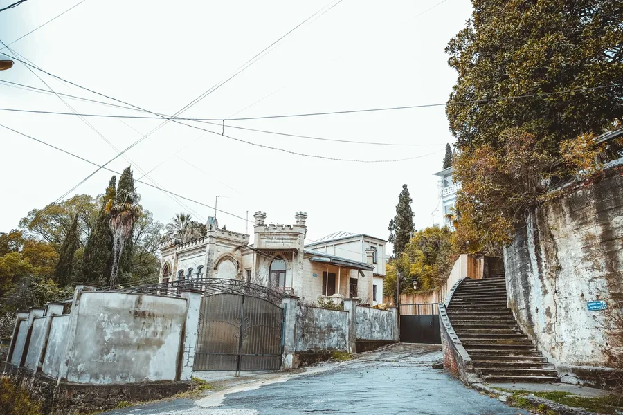
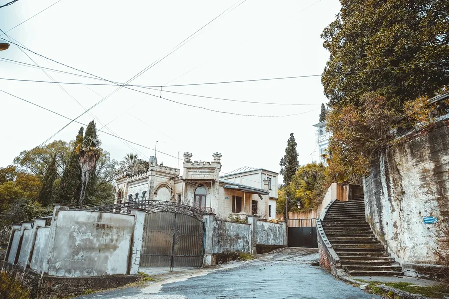

Сухумские зарисовки
Автор Элина Квициния, специально для newcaucasus.com
Этот фоторепортаж посвящён архитектурному разнообразию главного города Абхазии — городу Сухум, история которого насчитывает более 2-х с половиной тысячелетий.
Считается, что в городе до сих пор преобладает архитектура начала XX века. И это несмотря на то, что многие уникальные постройки и здания были разрушены. Да и сейчас немалая часть старинных строений находится далеко не в лучшем состоянии.
В архитектуре города органично перекликаются как западные, так и восточные мотивы, сливаются стили Востока и Запада.
 
